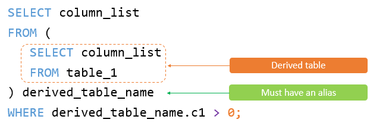

Derived Table
We need to look at another aspect called “Derived table”.
A derived table is a virtual table returned from a SELECT statement. A derived table is similar to a temporary table, but using a derived table in the SELECT statement is much simpler than a temporary table because it does not require steps of creating the temporary table.
The following illustrates a query that uses a derived table:
